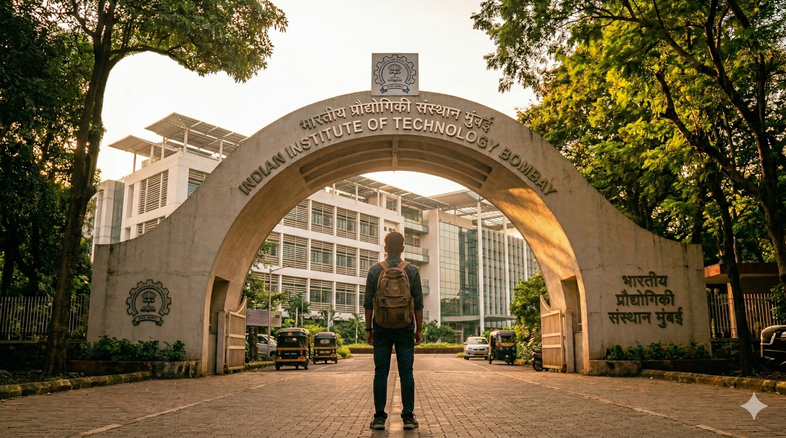
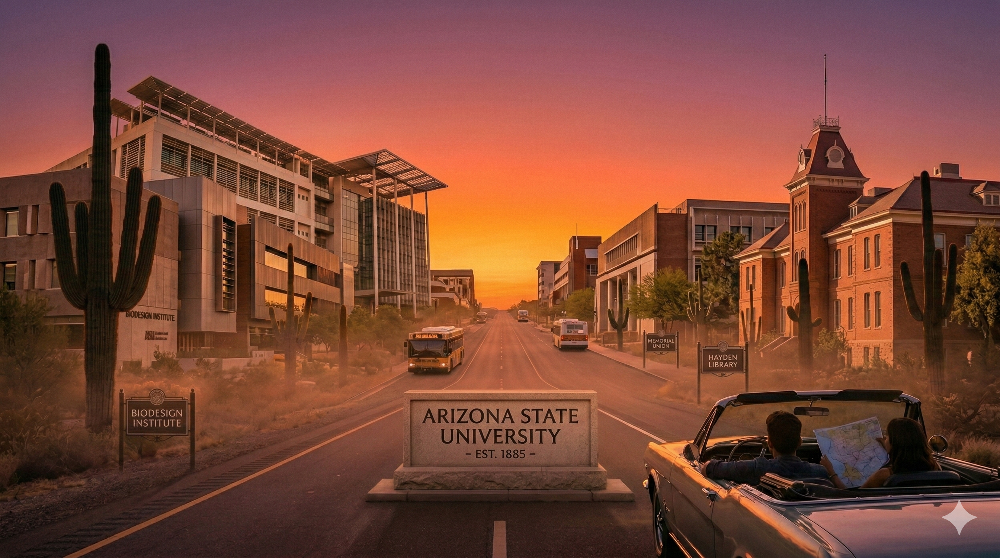
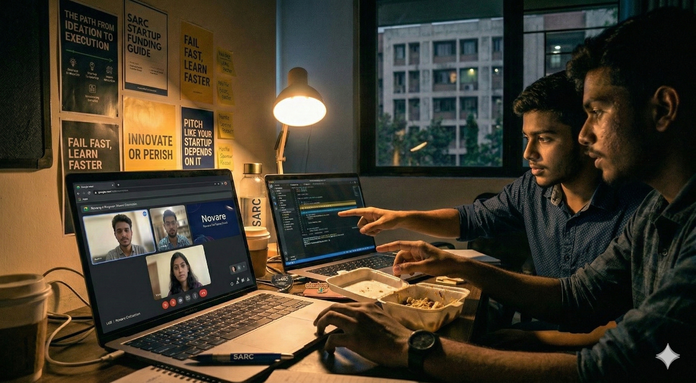
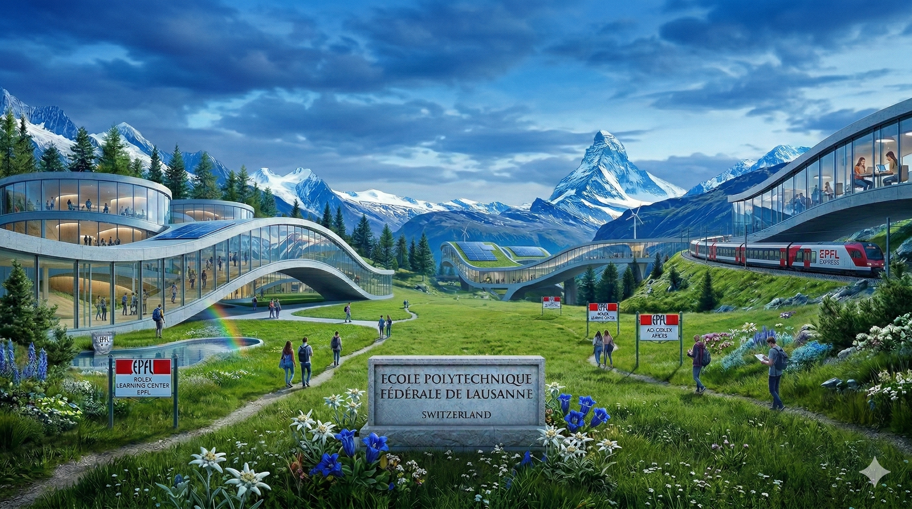

Rearview Archives
Stories, side quests, and snapshots from the last few years. These are the people, places, and turning points that shaped the journey. Archived in memory, but always driving the future.

Chapter 01: Beyond the Scoreboard
Getting into IIT Bombay was a numbers game- AIR 826. But walking through the gates was a reality check. This is the story of freedom, finding my footing in a city within a city, and discovering that the most valuable rank isn't the one on the notification, it's the one you earn every day.
For two years, IIT Bombay was just a target, a destination on a map. But when I finally walked through the main gate, I realized the "destination" was actually just the starting line. The number on the rank list faded the moment I met the people who would define my next few years.
The culture shock wasn't about competition; it was about the sheer density of brilliance. Suddenly, I was surrounded by the sharpest minds from every corner of the country: musicians who could code, writers who understood quantum mechanics, and innovators who dreamed in algorithms. The diversity was overwhelming in the best way possible.
The competitive silence of JEE prep dissolved into the chaotic symphony of hostel life. My room became a think tank for everything from intricate circuit design to existential life crises. We debated academic theories, critiqued movies, and planned our futures over 3 AM canteen runs. We explored every corner of the campus and every facet of ourselves- discussing everything from "what course to take" to "what life to live."
Life exploded beyond the classroom. Between the adrenaline of the fests, the late-night grinds for club events, and the endless array of activities, I found my rhythm. It was a kaleidoscope of experiences: organizing events, building projects, and realizing that learning happens as much in the corridors as it does in the lecture halls.
IIT Bombay gave me a new beginning, but more importantly, it gave me a family. These friends, my tribe, have seen me at my best and my worst. As I look in the rearview, I realize that while getting in was the dream, the hardest part won't be the exams or the grades. It will be packing up that suitcase again and leaving this home we built together.

Hello World, Hello West: My Summer at ASU
110°F heat, physics-informed neural networks, and my first international flight. Arizona wasn't just an internship-it was my first lesson in independence. A crash course in surviving (and thriving) 8,000 miles from home.
The realization hit somewhere over the Pacific- I was completely on my own. No parents to call, no Mumbai streets I knew by heart, no comfort zone within arm's reach. Just me, a visa, and Arizona State University.
The research under Prof. Ayan Mallik was rigorous—Physics-Informed Neural Networks (PINNs) for parametric uncertainties in DC-DC converters. That part was challenging but familiar. The part that really shaped me? Everything else.
I found myself debugging algorithms alongside fellow researchers from every corner of the globe. Strangers quickly turned into teammates, and teammates turned into the kind of friends you stay in touch with long after the internship ends.
We didn't just survive the desert heat; we chased the horizon. Navigating American grocery stores and realizing We had no idea which aisle had what. Getting our first paycheck and opening our first US bank account. Taking the light rail to campus, hiking Mountain on weekends, ordering food from restaurants where no one understood our Indian-accented English- at first. From the neon lights of Las Vegas to the coastal breeze of Los Angeles, those spontaneous weekend road trips became the heartbeat of the summer.
That summer, I achieved 92% accuracy on converter uncertainty estimation. But more importantly, I achieved 100% confidence that I could figure things out on my own. Arizona taught me that I could be brilliant in a lab and capable in real life. That I could adapt, survive, and even enjoy the chaos of a new environment. By the end of summer, the desert heat didn't feel alien anymore. It felt like home. And leaving was harder than I expected.

Zero to One: The Student Founder Experiment
While my peers were optimizing algorithms, I was trying to optimize recruitment. Building Novare Talent as a student taught me the messy reality of entrepreneurship: sales, product-market fit, and the relentless drive required to turn an abstract idea into a functioning business.
Novare Talent started as an idea, evolved into a side project, and somehow became the thing that consumed my college years. The timeline looked like this: attend lectures, rush back to the hostel, get into update meetings, fix deliverables, attend lab sessions, build codebases.
There's nothing romantic about startup life when it's happening. It's cold emails that get no responses. It's pitching to people twice your age when you're still figuring out your major. It's shipping products that aren't perfect because "perfect" is the enemy of "shipped." It's failing fast because there's no time to fail slow.
But somewhere in that chaos, I learned more about business, psychology, and human behavior than any classroom could teach. I learned that a paying customer who complains is better than a silent user who leaves. That a good founding team is worth more than a perfect business plan. That your biggest competitor is often yourself your self-doubt, your perfectionism, your fear of judgment.
The lesson? You don't become a builder by studying business books. You become one by building, failing, adjusting, and shipping again. And sometimes, the best education happens in a hostel room with a laptop, a dream, and absolutely no idea what you're doing.

Postcards from the Alps: Life in Slow Motion
Switzerland wasn't just a semester exchange; it was stepping into a postcard. From the diverse halls of EPFL to backpacking across 15 countries, this was where my research met a high-quality life. A chapter of snow, science, and finding peace in the Alps.
Switzerland was completely different from anything I had experienced before. It wasn't just the landscape, though calling it "Heaven on Earth" feels like an understatement. It was the entire frequency of life. Living with a local in their rented house gave me a backstage pass to the true Swiss culture- navigating the nuances of the French language, understanding their quiet precision, and seeing life through a lens that was vastly different from the chaos of Mumbai or the heat of Arizona.
At EPFL, the academic environment was electric. I worked under Prof. Mathew on Concatenative Neural Speech Synthesis, diving deep into the architecture of voice. The rigor was intense, but rewarding- culminating in a research paper we submitted to Interspeech 2026. But beyond the code, it was the people. The peer group at EPFL was a global melting pot; sitting in a cafeteria meant hearing five different languages and debating ideas with brilliant minds from every corner of the world.
But the education didn't stop at the lab doors. Being in the heart of Europe turned every break into an adventure. I managed to travel to 15+ countries, turning weekends into lessons on history, culture, and art. Each border crossing was a new perspective, widening my view of the world.
And then there were the "Swiss" moments. The weekend hikes that left us breathless (both from the elevation and the view), trying authentic cheese fondue with friends, and experiencing a magical white Christmas covered in snow.
The peace of the environment allowed me to reflect on my life completely. In the silence of the mountains, I found a clarity that is hard to find in a city. This semester was a shaping moment: a perfect blend of technical growth and personal discovery that will leave a permanent impact on my future.